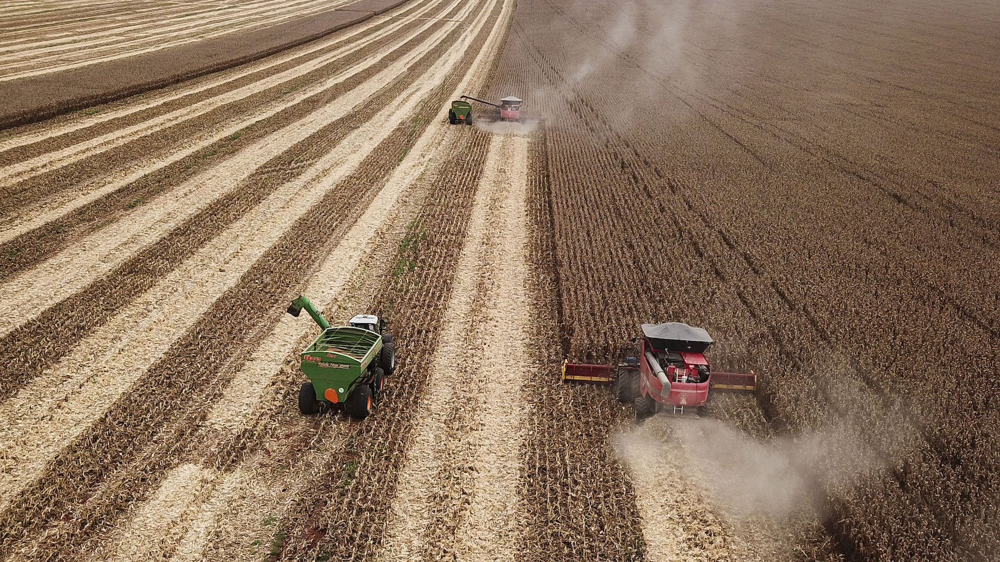
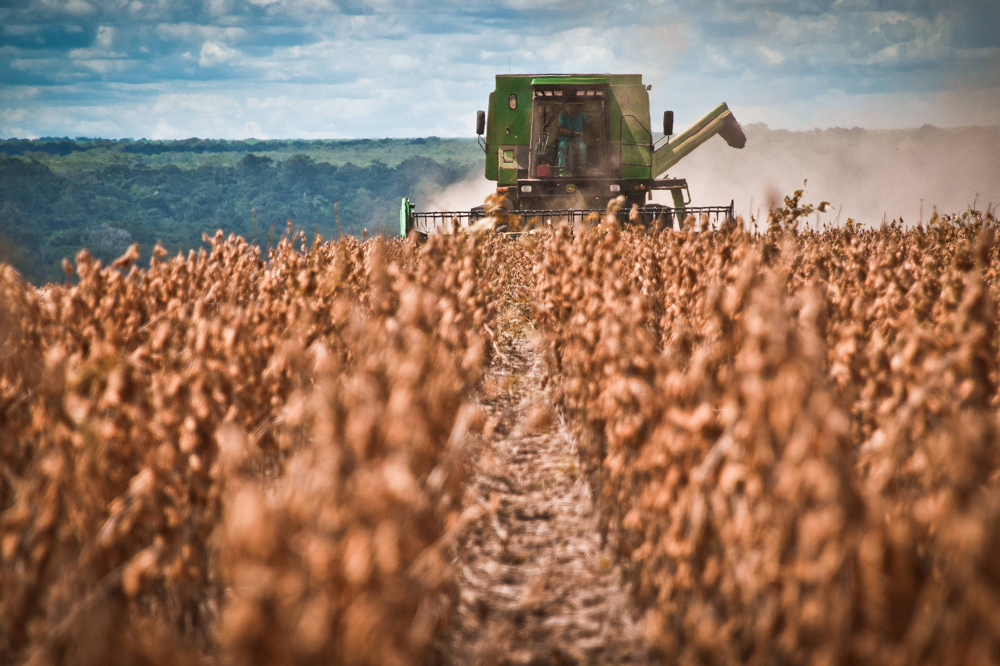
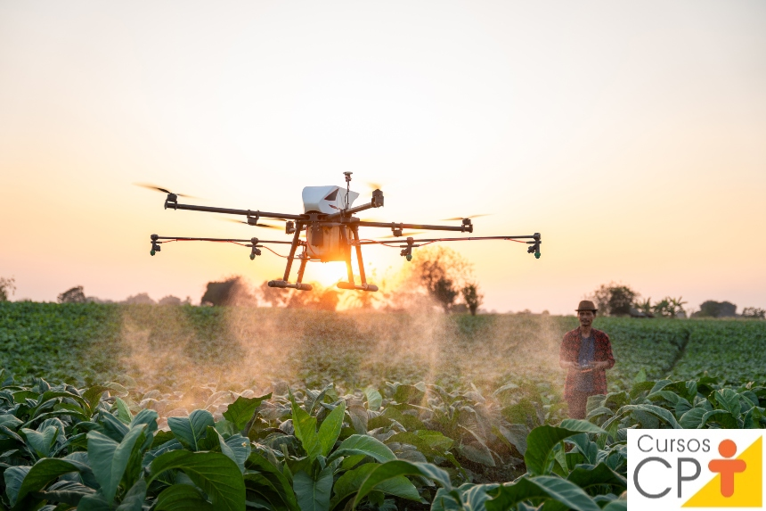

Agricultura intensiva
 O
O
O conceito de agricultura intensiva implica maior uso de terras agrícolas para produzir os maiores rendimentos possíveis para obter lucro e satisfazer as necessidades alimentares da população. A resultado é alcançado por meio de características de agricultura intensiva: aumento do uso de fertilizantes e inseticidas, irrigação abundante, tratamento de terras com máquinas pesadas, plantio de espécies de alto rendimento, ampliação de áreas cultivadas, entre outros. Dessa forma, quanto mais insumos – melhores serão os resultados.
 benefícios Da Agricultura Intensiva
benefícios Da Agricultura Intensiva
A principal vantagem da cultivação industrial do solo é o desempenho aprimorado quando rendimentos mais elevados são colhidos em territórios menores. Isso traz benefícios econômicos aos proprietários de terras e fornece alimentos para a crescente população, o que é característico da agricultura intensiva no Brasil. A agricultura comercial intensiva satisfaz plenamente a demanda do mercado, mesmo em áreas densamente habitadas. Também requer menos mão-de-obra em comparação com métodos de cultivo ecológicos, já que o controle químico de pragas e ervas daninhas é mais rápido e mais fácil de implementar.
Agricultura Intensiva E Suas Consequências Ambientais
No entanto, as safras mais altas apresentam algumas desvantagens. A lavoura tradicional não se alinha com o conceito de sustentabilidade, nem contribui para a proteção da natureza, portanto, os problemas da agricultura intensiva requerem uma consideração séria.
O desmatamento é a mais alarmante das características da agricultura intensiva brasileira visto que leva à degradação do solo e causa expansão a novas terras. Em particular, as florestas são cortadas em prol de novas áreas férteis e produtivas. O tamanho do problema fica claro com números ilustrativos. Assim, a agricultura intensiva moderna é culpada por um 80% do desmatamento global.
Resistência de pragas e ervas daninhas a produtos químicos. O uso regular de pesticidas e herbicidas sintetizados na agricultura intensiva induz a adaptação. Grandes e frequentes aplicações tornam-se menos eficazes ou ineficazes. Como resultado, os parasitas se tornam mais fortes e se estabelecem em números multiplicados além de todo controle razoável.
Degradação do solo. “Espremer” os campos tanto quanto possível causa o esgotamento do solo e a erosão. Portanto, as práticas de agricultura intensiva agressivas tornam as terras mais fracas, pois interferem significativamente nos processos naturais do solo. Em particular, os pesticidas químicos destroem os microrganismos no solo que garantem a compostagem e a incorporação adequada de matéria orgânica.
Impacto nos habitats naturais. A necessidade de buscar novos territórios para as necessidades da agricultura intensiva afeta a vida selvagem e a roubando os espaços de vida tradicionais.
Poluição da água. Devido à agricultura intensiva, penetram nos corpos d’água os pesados escoamentos químicos dos campos, envenenando as populações aquáticas. O desmatamento e corte de faixas de proteção nas beiras dos rios causam inundações e sedimentação.
Mudanças climáticas. As práticas de agricultura intensiva são os principais promovedores da mudança climática global, acelerando a erosão do solo e a poluição geral do meio ambiente, devido ao impróprio sequestro de carbono, emissões de combustível fóssil e abordagem exploradora do uso da terra e da água.
Impacto na saúde humana. O teor elevado das substâncias químicas em plantas consumidas induzem problemas no corpo humano, incluindo até anomalias congênitas.
Agroquímicos Na Agricultura IntensivaA agricultura intensiva é o método de produção agrícola que privilegia a otimização da produtividade por meio do uso intensivo de insumos e tecnologias. Esse sistema visa obter altos rendimentos por área cultivada e, para isso, utiliza técnicas como o plantio em larga escala, a aplicação de fertilizantes químicos e agrodefensivos, o controle rigoroso de pragas e doenças, a irrigação controlada e o uso de maquinários agrícolas avançados
Além da expansão de novos territórios quando a vida selvagem perde suas áreas naturais, os animais são muito afetados por aplicações químicas na lavoura industrial. Enquanto os herbicidas poluem os recursos naturais, os pesticidas raramente são seletivos e também matam espécies benéficas, como polinizadores e microorganismos que vivem no solo, impactando a sua fertilidade. As pesquisas recentes relatam uma redução nas populações de pássaros e abelhas em terras agrícolas devido a inseticidas pesados na…ental significa melhor estabelecimento de pragas e desenvolvimento de sua resistência aos controles aplicados. Isso resulta em uso extremo de produtos químicos (geralmente críticos para os humanos e a natureza) e introduções de opções mais fortes.
Além disso, a mesma cultivação requer o mesmo conjunto de nutrientes, e a monocultura em consórcio com a agricultura intensiva também é benéfica nesse aspecto, uma vez que ajuda os agricultores a equilibrar a fertilidade do solo e lidar com a erosão.
ecnologias Na Moderna Agricultura Intensiva
As inovações facilitam muito os esforços dos agricultores e economizam os custos dos agricultores. A agricultura de precisão é extremamente útil na agricultura intensiva e faz parte das práticas usuais de muitas empresas hoje em dia.
O monitoramento de campo com drones e satélites permite aos proprietários de terras agrícolas industriais entender a situação em tempo real, dia e noite, enquanto o histórico da análise detalhada está disponível em plataformas agrícolas online. Mesmo as fazendas mais remotas podem ser inspecionadas conforme a escala de conectividade com a Internet se expande. Localmente, os sensores de campo relatam com precisão o estado das coisas. Por exemplo, os sensores no tronco de amendoeiras sinalizam a necessidade de irrigação. Outra descoberta significativa para a moderna agricultura intensiva é o GPS que fornece os dados de localização exata e, assim, permite distinguir áreas separadas.
Os aplicativos para smartphones e tablets ajudam os agrônomos a inspecionar e gerenciar operações agrícolas, solicitar suprimentos, programar vendas de produtos e rastrear o transporte de qualquer lugar conectado à internet.
As conquistas da eletrônica e da robótica também encontram sua implementação na agricultura intensiva, auxiliando no controle de máquinas, controle mecânico e químico de ervas daninhas e pragas, semeadura e colheita, etc.
Os experimentos de substituição da luz solar por LED abrem novos horizontes para o uso de áreas abandonadas para fins agrícolas, como sótãos, minas, antigas fábricas.
Levando em consideração todas as desvantagens da agricultura intensiva, os ativistas ecológicos reclamam soluções mais responsáveis, promovendo uma agricultura intensiva sustentável. No entanto, a mudança total do sistema de agricultura intensiva para alternativas ecológicas e regenerativas causará uma redução no fornecimento de alimentos. Além disso, a conformidade contínua com os padrões da agricultura orgânica intensiva é um grande desafio para os agricultores, e as aplicações não industriais exigem mais custos, esforços e tempo.
 agricultura intensiva é o método de produção agrícola que privilegia a otimização da produtividade por meio do uso intensivo de insumos e tecnologias. Esse sistema visa obter altos rendimentos por área cultivada e, para isso, utiliza técnicas como o plantio em larga escala, a aplicação de fertilizantes químicos e agrodefensivos, o controle rigoroso de pragas e doenças, a irrigação controlada e o uso de maquinários agrícolas avançados